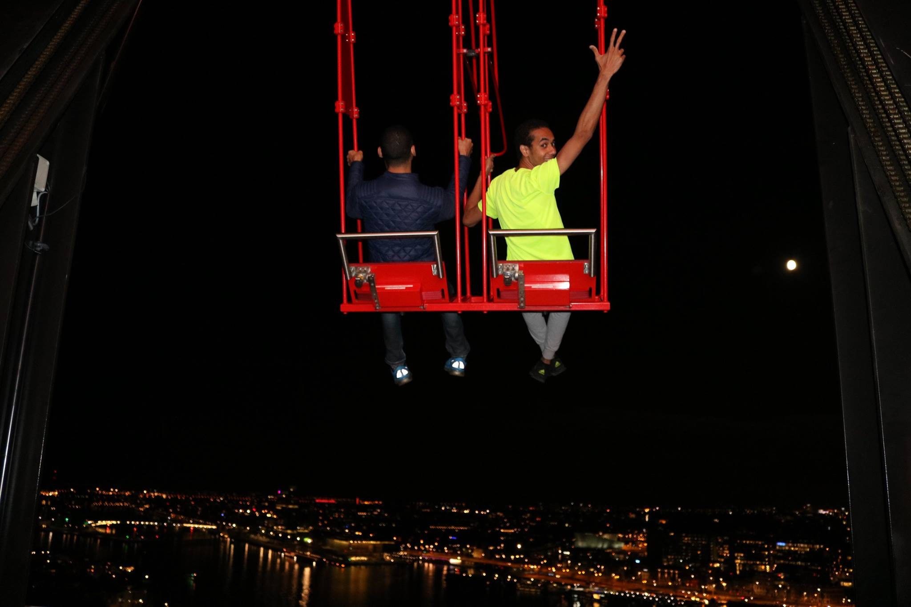
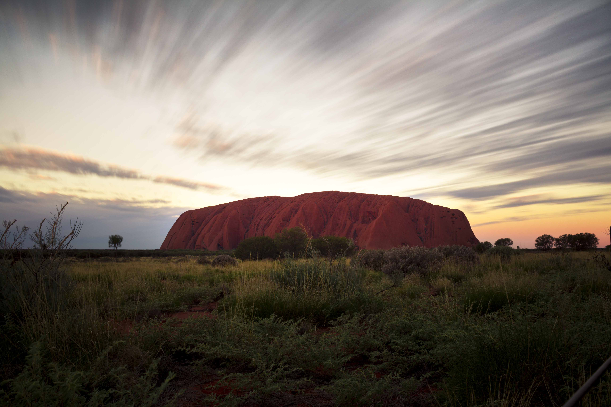
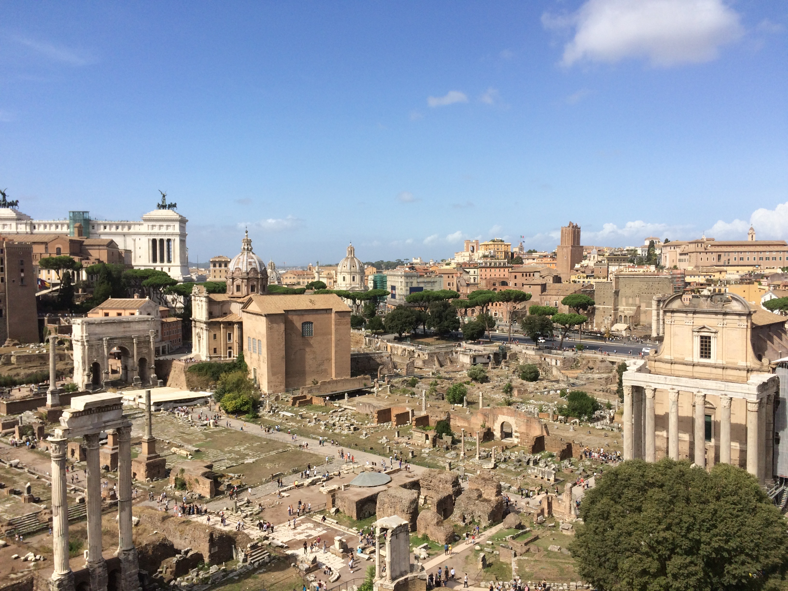
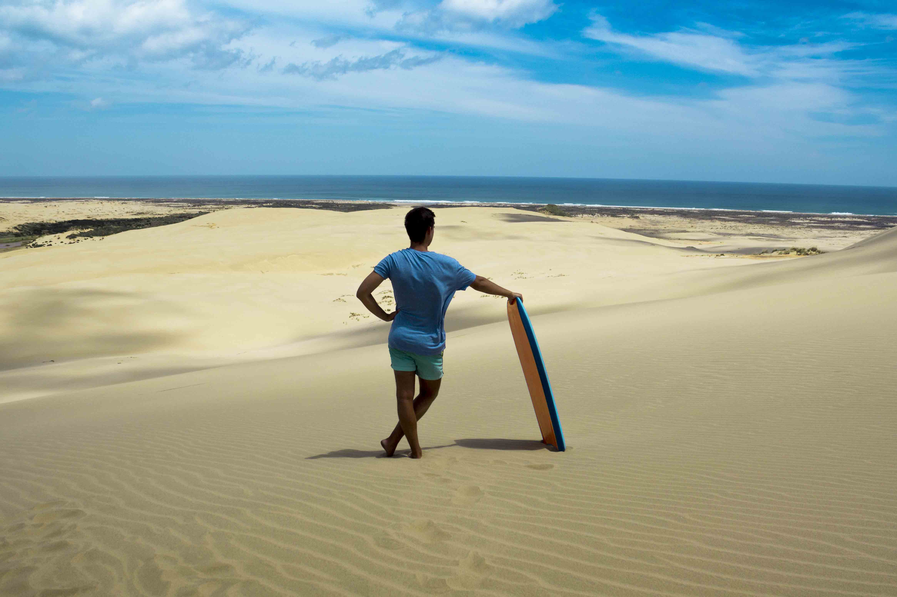

Willkommen auf unserem Blog!
I believe i can fly, Amsterdam
I believe i can fly i believe i can touch the sky, nur in diesem Moment könnte ich mir diese satz vorstellen. Die Foto würde in Amsterdam genommen, es gibt da eine neue Tower heißt A'DAM, da gibt es Europe's highest swing.
Die Braut des Mittelmeers

Alexandria wurde in Ägypten als die Braut des Mittelmeers genannt. nächste Woche fliege ich wieder nach Alexandria nach ein entspanntes Semester. Da kann ich endlich die Sonne wieder sehen, aber die wichtiger ist meine Eltern.
Die unendlichen Weiten des Outback
Als letzten Teil unserer Reise durch Australien hatten wir uns den wohl größten, menschenleersten und für mich spannendsten Teil aufgehoben - das Outback. Aus dem tropischen Norden in Cairns wollten wir innerhalb von einer Woche über 4500km durch das Outback über Adelaide nach Melbourne.
Rom, die ewige Stadt
Rom hat eine Vielzahl von herrlichen Gebäuden, Brunnen, Plätzen und Gärten zu bieten und ist eine der kulturreichsten Städte überhaupt. An jeder Ecke gibt es Antikes zu entdecken und selbst die etwas moderneren Viertel der Stadt haben etwas Besonderes an sich. Wer die ganze Stadt sehen will, sollte reichlich Zeit einplanen, denn, selbst zu Fuß, trifft man immerwieder auf spannender und interessante Orte. Neben den vielzähligen Ausgrabungen und antiken Bauwerken gibt es auch diverse Museen, Parks und öffentliche Plätze.
Ich war während meiner Semesterferien für vier Tage in der Hauptstadt Italiens und habe eine Menge gesehen. Zu den Highlights zählt definitiv das Kolosseum, welches allein surch seine Größe beeindruckt. Nur wenige Schritte weiter befindet sich der Eingang zum Forum Romanum, einer riesigen Ausgrabungsstätte, wo man ganze Tage verbringen kann. Auch die Sixtinische Kapelle, im Vatikan, von innen zu sehen, war einfach nur atemberaubend. Weitere architektonisch beeindruckende Gebilde umfassen das Pantheon, den Trevi Brunnen, die Engelsburg und unzählige Basiliken. Ab dem späten Vormittag sind diese allerdings alle stark überlaufen. Deshalb war ein Spaziergang entlang der Via Appia Antica am letzten Tag eine nette Abwechslung. Insgesamt ist Rom auf jeden Fall einen Besuch wert, wenn man genug Zeit hat.
Sandsurfen in Te Paki, Neuseeland
Letzte Woche war ich mit zwei guten Freunden in Neuseeland. Genauer gesagt in der kleinen Siedlung Te Paki, ganz im Norden Neuseelands. Die Straßen bis hierhin waren fast komplett menschenleer. Hin und wieder überquerten einige Schafe die Straße und nur vereinzelt begegnete uns Gegenverkehr. Doch an den Great Sand Dunes angekommen trafen wir auf riesige Menschengruppen. Schnell hatten wir uns für wenige Dollar drei Sandboards ausgeliehen und machten uns auf den Weg die Dünen zu erklimmen. Das stellte sich allerdings als anstrengender heraus als gedacht. Ein wenig Überwindung hat es dann auch gekostet sich fallen zu lassen und die doch ziemlich steilen Dünen, auf dem Bauch, herunter zu surfen. Mit wahnsinnigen Geschwindigkeiten rast man durch den Sand und unten angekommen ist das ganze Gesicht voller Sand. Doch es lohnt sich auf alle Fälle! Dieser Adrenalinschub und die hohen Geschwindigkeiten machen das zu einem einmaligen Erlebnis.